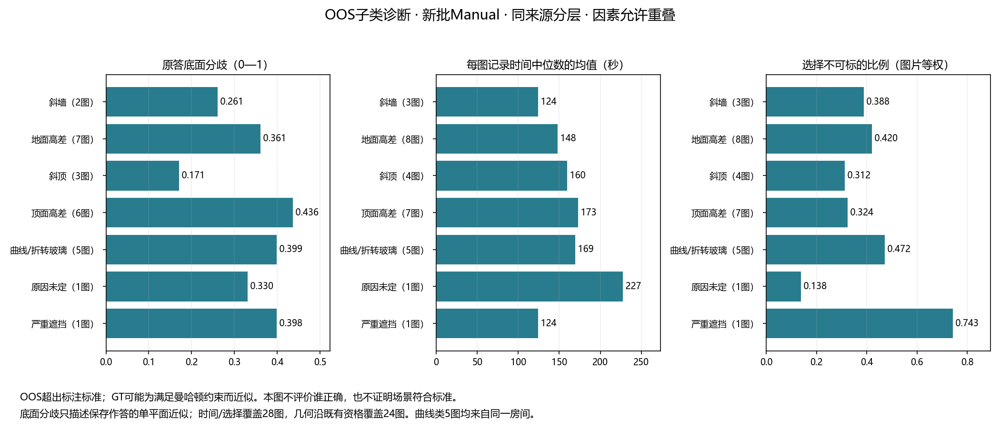

OOS结构与范围复核
28张图片 · OOS超出标注标准；GT可能为满足曼哈顿约束而偏离真实边界。这里观察人员的近似表达与分歧，不根据GT给人员判对错。
先看图例：OOS 为什么不适合按普通布局评分？
以下为统一轴测视角的三维构造图。为观察内部，移去前侧墙并将顶面半透明显示；灰虚线补足省略的墙面／顶面轮廓；地面高差图的顶面仅留轮廓。所有图均非实测、非GT。斜墙角度不指定，不表示135度。同一张图可以同时有多个因素；“暂时看不清／原因未定”和严重遮挡另保留，不靠示意图自动分类。
查看完整六联图 · 打开整版 PDF · 打开整版高清 PNG；图版在新标签打开，可用浏览器另存为。
0 · 标准构造参照

SVG 矢量 · PDF 矢量 · 300 dpi PNG
1 · 斜墙：俯视时墙边不沿同一组正交方向

SVG 矢量 · PDF 矢量 · 300 dpi PNG
2 · 斜顶：同一片顶面连续升高或降低

SVG 矢量 · PDF 矢量 · 300 dpi PNG
3 · 多层天花板：不同区域有不同顶面高度

SVG 矢量 · PDF 矢量 · 300 dpi PNG
4 · 多层地面：地面、平台或楼梯存在高差

SVG 矢量 · PDF 矢量 · 300 dpi PNG
5 · 曲面／连续折面：墙或玻璃持续改变方向

SVG 矢量 · PDF 矢量 · 300 dpi PNG
GT 也可能受到表示约束：若用单一顶／底面或正交墙边去近似上述构造，边界可能被移到真实结构之外。因此这里比较人员如何表达、在哪里分歧以及用了多久，不把“更接近既有 GT”直接当作“更符合真实房间”。是否为 OOS 仍沿用已确认记录。
已完成的子类统计：表达、分歧、时间和任务选择
28图因素已整理。新批Manual804份有来源时间与任务选择，其中703份／24图按既有资格整理几何。斜顶图可以保留较一致的底面近似；曲线玻璃的分段方式与跨门口取界存在明显差异。它们均不恢复in-scope。

完整统计、解释与来源 · 旧融合覆盖22图，当前v2人数实验未纳入OOS；完整输出不等于真实结构正确。
记录自动保存在当前浏览器；请导出备份。这里的复核意见不会直接改写原始数据、GT或评分资格。